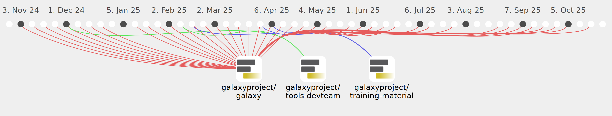

jdavcs

Commits all-time: 3944
Commits last year: 194

(187)
- a6f3d74
- 3167b91
- c15a897
- 898fcfc
- 273a2e9
- 2e3c409
- b95d083
- 490257d
- b56638b
- 4f8244b
- 46faf6b
- bc86348
- 6bb301b
- d85363c
- a1be7b1
- 5cf48dc
- 8f99a45
- b6ffa32
- 2acce63
- 86d29bf
- f55c3f7
- 6c281d2
- dfe1536
- f2f5513
- f942729
- 0d81abe
- fc88f6f
- bbc5a66
- 3d2eb9f
- c4c6607
- 104a375
- e050229
- e878d57
- 5beeb96
- 3b35f1f
- 3c2244b
- 5c143ef
- 8de7851
- f5da759
- d128682
- 5251d94
- a03673b
- ef09280
- b69a736
- bd75278
- a49d031
- bb5a6a7
- b588b27
- b4048c8
- 2b5cb04
- 319045f
- 1c31c93
- 9f4bcba
- cf67d22
- e1f35c0
- 8ede4cb
- 27d9c36
- 318e70e
- eec479e
- 77355b0
- f236237
- 0cef31e
- 1bf7299
- b731dde
- 9b63eaf
- 26cff17
- b00dc2a
- 740913a
- a54f860
- 4db7d2b
- 0732a7e
- 1a879ac
- 77dd576
- b438009
- 44e67d7
- 3d3fbb7
- 4ebc0c1
- 5aab557
- c25adde
- b16cee3
- 65f135e
- cf23097
- 4973c67
- c43f5a9
- 88482e8
- 4013fb6
- 9774893
- ec5ca76
- 81c4a77
- 8e88724
- cb56261
- 330f6cc
- 4b77c1a
- 3bd6b48
- d85a48e
- c9a51a2
- b1c8736
- d720cb0
- 5a1b0ba
- 83fed56
- b05170e
- 813a103
- 421d43e
- c107b64
- e40e22a
- 1a16365
- 9945eb2
- abc3098
- d500bbe
- 60dc7d7
- 4294ac0
- 75ab368
- 5a09085
- 37e71e9
- a2c93ea
- eadf1c6
- 02f5c28
- c512cfe
- 24951aa
- e1e81c0
- b24d8ae
- 8140ff5
- bff0579
- b62ce32
- 16d8bf9
- 357356d
- 09e3061
- 5c1506a
- 0a2aeb6
- e82b356
- a015157
- 6f182d7
- e8a4117
- f0edc7f
- 8711543
- cbabbc7
- d483d09
- 62f6ab3
- 5367209
- e6b4cb6
- b00bc3e
- f39484c
- ed38195
- 7041b6b
- eed87c4
- c87d539
- a202a65
- c91fce6
- 763c859
- aed502d
- ee749b9
- ddee1a2
- d94bfe4
- b10409b
- fb46c0a
- c47bb0c
- 89b9a50
- 286fd6e
- 9c0ef30
- 308e40d
- 9c79d36
- ef14b2b
- a21be74
- e8e5e0f
- 0a026ad
- 2650e1e
- 2f8829b
- a7e0666
- 368bb1c
- 02ecc83
- 0850cea
- 0058f90
- 5584384
- ba7b28f
- 57805fa
- 59b4677
- 4507c48
- 1bd316e
- cce6f59
- 3a59617
- 5ffdf78
- 01a3f27
- 8a40ef1
- 4f66c00
- 46d13a7
- b0e8306
- 8a19c8a
(5)
(2)